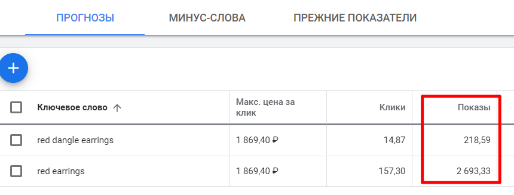

Чтобы добавить новые ключевые фразы, нажмите синюю круглую кнопку Плюс.
Лучше всего все ваши фразы писать в кавычках – чтобы Google показывал ста-
тистику только лишь по ним самим. Так как по умолчанию (когда кавычки не
стоят), сюда попадает также статистика по фразам вроде «red dangle earrings
ebay», «long red dangle earrings» - то есть все те, где есть наша ключевая фраза.
Но нам интересен только наш конкретный поисковый запрос – поэтому добав-
ляем кавычки и смотрим на результат.
Получилось в 2 раза меньше. Вот эти данные уже можно взять для анализа фраз.

Как зарегистрироваться в Google Ads без данных карты и
оплаты
Примерно с лета 2016 года Google не позволяет работать с инструментом «Пла-
нировщик ключевых слов», если вы не внесли деньги и не начали рекламную
кампанию.
Но есть вариант обойти это препятствие.
Если вы ещё не начинали регистрироваться в Google Ads, то перейдите по
ссылке https://ads.google.com/home/
Войдите в сервис под своим аккаунтом Google и на самом первом шаге нажмите
на ссылку «Вы опытный пользователь Google Рекламы», а на следующей стра-
нице – «Создать аккаунт без кампании».
Это позволит получить доступ к Планировщику ключевых слов без внесения
денег на счёт.
Как лучше разобраться в продвижении товаров / Etsy SEO?
Если вы хотите лучше разобраться в том, как работает поиск Etsy и как с его
помощью продвигать свои товары, то рекомендую пройти Базовый курс по Etsy
SEO. Бесплатное продвижение товаров на Etsy.
В ходе данного видеокурса вы узнаете:
• об основных причинах, почему вас могут не находить в поиске 99% поку-
пателей
• почему одни товары выше в поиске Etsy, а другие - ниже
• как с помощью мозгового штурма составить фразы для ваших товаров
• 12 способов найти хорошие фразы, которые покупатели вводят в поиске
• как из всех фраз выбрать лучшие
• 3 стратегии составления заголовков и тэгов из отобранных фраз
Также вас ждут 4 бонуса, которые помогут найти дополнительные и отсортиро-
вать лишние фразы.
Всего в курсе 34 урока в видео и текстовом формате.
Подробнее о курсе читайте здесь: https://courses.proetsy.ru/etsy-seo/
Бонус для читателей книги – скидка 20% по промокоду ETSYBOOK
6. Фотографии товаров
Технические требования к фотографиям товаров
К каждому листингу вы можете добавить от 1 до 10 фотографий. Постарайтесь
загрузить хотя бы 5, а лучше все 10.
Etsy советуют загружать фотографии размером от 2000 пикселей по ширине.
Максимальное разрешение – 3000 пикселей. Если ваше фото будет больше, то
Etsy ужмёт его до размера 3000 пикселей.
Фотографии должны быть в формате JPG, PNG или GIF.
Особенности фотографий физических товаров
Если вы продаёте физические товары, то фотографии – это ваш главный ин-
струмент продаж. От них зависит:
• обратят ли покупатели внимание на ваш листинг в общей ленте результа-
тов поиска
• а если обратят и зайдут посмотреть – захотят ли купить
Первая часть проблемы целиком зависит от первой фотографии вашего ли-
стинга. Поэтому постарайтесь, чтобы она выгодно выделялась на фоне других
товаров. Для этого, просматривая результаты поиска по важным запросам, об-
ратите внимание, как ваши листинги смотрится на фоне других. Сделайте это
как на компьютере, так и на телефоне.
Возможно, стоит слегка изменить ракурс или масштаб фото, чтобы оно выгля-
дело выигрышнее.
Фотографии со второй по десятую видно уже только при заходе в листинг. Зна-
чит ваш товар уже чем-то заинтересовал потенциального покупателя. Осталось
только ответить на все его вопросы.
Именно для этого и служат дополнительные фотографии в интернет-магазинах
– они должны отвечать на вопросы покупателей, так как те не могут потрогать
ваш товар или примерить его на себе.
Каждая фотография должна давать какую-то новую информацию: о размере,
рисунке, качестве исполнения товара. Подумайте, какие мысли проносятся в
голове у человека, который хочет купить ваш товар. И не найдетесь на то, что
он начнёт читать описание листинга – далеко не все вспоминают о нём. Многие
просто закрывают страницу и переходят к следующей. Ваши конкуренты всего
в одном клике от вас.
Особенности фотографий цифровых товаров
Если цифровые товары предполагают распечатку и дальнейшее использование
в обычной жизни (например, принты картин, схемы-выкройки), то крайне важно
показать товар «живьём». Так, как его увидит покупатель. Ведь он покупает не
файл, а, например, картину в свою гостиную.
Поэтому покажите ему, как ваш принт будет смотреться в рамке над диваном
(для этого существуют mock-up, или сцены/макеты).
Что можно разместить на фото помимо товара
Не обязательно все 10 изображений листинга отводить под фотографии товара.
Можно использовать несколько фото для подачи важной информации. Напри-
мер, вы можете:
• написать основные правила магазина (срок отправки, возвраты и т.п.)
• написать, в чём ваша уникальность – почему купить должны именно у вас
• привести цитаты лучших отзывов ваших клиентов
• дать ссылки на ваши соцсети
• попросить добавить товар в избранное
• добавить информацию о себе, чтобы расположить клиента
• разместить фото похожего товара или того, который дополнит текущий (а
ссылки на них привести в описании товара)
• акции магазина


Настройка первой фотографии
Первая фотография листинга – это именно то, что видят в поиске Этси покупа-
тели. Или не видят – и проходят мимо. Поэтому важно, чтобы ваше изображе-
ние отличалось от конкурентов и бросалось в глаза.
Если затруднительно перефотографировать товар, то можно попробовать изме-
нить ракурс с помощью инструмента Adjust thumbnail при редактировании ли-
стинга.
Там вы можете увеличить фотографию и сместить акцент на какую-то деталь.
Тем самым можно вызвать интерес покупателей, который заметит ваше не-
обычное фото в поисковой ленте.
Как сделать хорошую фотографию
Главный залог хорошей фотографии – это свет. Да, именно он, а не хороший
фотоаппарат. Если у вас будет плохой свет (например, дома от обычной лам-
почки), то фото получатся невзрачными. А покупателю очень сложно отличить
качество фотографии от качества товара. По сути, человек покупает ваши фо-
тографии, а не товар. Поэтому то, как вы покажете своё изделие, и повлияет на
шансы его продать.
Самый простой и дешевый способ сделать хорошие снимки – это дневной сол-
нечный свет. Лучше всего рассеянный (когда он светит через облака). Вы мо-
жете выйти на улицу и сделать там несколько снимков или воспользоваться
своим подоконником.
Также можно купить или соорудить самостоятельно лайтбокс – специальную
«коробку», на стенки которой можно направить источники света. О том, как сде-
лать лайтбокс самостоятельно вы можете прочитать, например, в моей статье
https://proetsy.ru/kak-sdelat-laytboks-ili-svetovoy-kub/
Помимо этого, настоятельно рекомендую постоянно просматривать листинги на
Этси и сохранять себе понравившиеся фотографии (например, в Pinterest). Про-
анализируйте их, попробуйте понять, что именно вам в них нравится – воз-
можно необычный ракурс (угол, под которым сделан снимок), крупный мас-
штаб, реквизит, цветовое сочетание и т.п.
Чем больше хороших и красивых фотографий вы увидите, тем легче вам будет
сделать нечто похожее. Вам нужно накопить на подкорочке мозга достаточное
количество «красоты», чтобы начать делать то же самое.
В каких программах обрабатывать фотографии
Я крайне не рекомендую загружать фотографии своих товаров сражу же после
съёмки. Их необходимо обрабатывать в программах, чтобы сделать привлека-
тельнее. Это как фото моделей в глянцевых журналах – если бы их не обраба-
тывали специалисты, то вряд ли кто-то бы покупал эти издания.
Lightroom


Я сама практически всю работу провожу в программе Adobe Lightroom. Она
предназначена для редактирования файлов RAW, которые получаются с помо-
щью зеркалок. Но в ней можно также обрабатывать и обычные JPG файлы.
С её помощью можно «вытянуть» снимки с довольно плохим светом, подкор-
ректировать тени, насыщенность цветов, кадрировать и т.п.
Вот небольшой и далеко не идеальный пример того, что можно сделать в этой
программе.
Fotofuze
Также в самом начале я часто пользовалась сервисом Fotofuze
(https://fotofuze.com/), который довольно просто, в пару кликов, позволяет сде-
лать фон у ваших фотографий белым – как будто вы снимали в профессиональ-
ной фотостудии.
Минус, который есть у данного сервиса – бесплатная версия позволяет сохра-
нить файлы небольшого размера.
О других программах и сайтах вы можете почитать в моей статье
https://proetsy.ru/5-servisov-dlya-obrabotki-fotografiy/
А для смартфонов читайте обзор сервисов здесь
https://proetsy.ru/10-servisov-dlya-obrabotki-fotografiy-chast-2/
Можно ли использовать водяные знаки на своих фото
Несмотря на то, что Этси не запрещают использовать водяные знаки, они не
рекомендуют их использовать. Аргументируя это тем, что фотографии с водя-
ными знаками не включаются в подборки для почтовых рассылок или в специ-
альные рекламные кампании.
Вместо того, чтобы использовать водяной знак на всё изображение, по их мне-
нию, лучше добавить логотип компании или название магазина фирменным
шрифтом где-то в уголке фотографии.

7. Случилась продажа
Как узнать, что у вас продажа
Вся информация о важных «происшествиях» в магазине находится на странице
Shop Manager – Dashboard.
Узнать о продаже можно с помощью оранжевого круга с цифрой внутри в левом
блоке меню в пункте Orders & Shipping.
Если у вас стоит мобильное приложение для продавцов Sell on Etsy, то о про-
даже вы узнаете с помощью звукового уведомления.
Ещё один способ узнать о покупке – уведомление на почту от Etsy и PayPal
(если вы принимаете платежи через эту платёжную систему). Так как оплата на
ваш кошелёк поступает мгновенно, то и письма приходят сразу после поступ-
ления денег.
В вашем почтовом ящике должно быть вот такое письмо от PayPal.